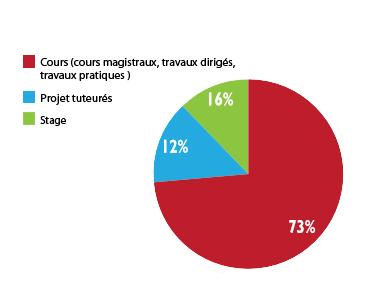
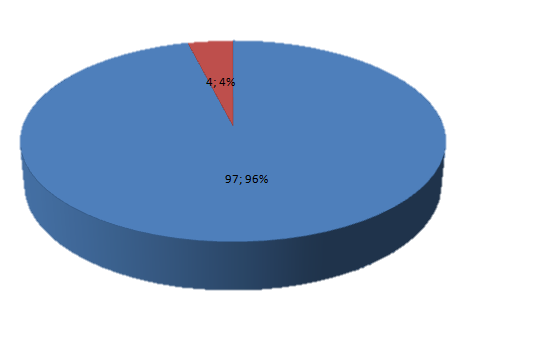

Objectif de la formation
Informatique (900 heures environ)
Cet enseignement concerne essentiellement l’étude des moyens matériels et logiciels et leur mise en œuvre dans les organisations.
Il est développé suivant trois axes de 300 h chacun, et est réparti sur 4 unités d’enseignements correspondant chacune à un semestre (UE11, UE21, UE31, UE41).
Ces 900 heures contiennent également les enseignements de modules d’approfondissement :
- Algorithmique et programmation Les bases de la programmation et de l’algorithmique, programmation WEB.
- Architecture, systèmes et réseaux (Architecture des ordinateurs, réseaux, systèmes d’exploitation.
- Outils et modèles du Génie logiciel Les outils et méthodes de génie logiciel Bases de données, Ateliers de génie logiciel, MERISE.
- Approfondissement Modules à choix.
Les projets tutorés ont pour objectifs d’apprendre à l’étudiant à travailler en équipe, à être autonome, à chercher et synthétiser de l’information, à acquérir une expérience professionnelle et développer des savoirs
Comparaisons
Entre BTS et Fac
- Réalisation en 2 années
- DUT se réalise dans une Université alors que le BTS dans des écoles publiques ou privées
- IUT plus généralistes et encourage les élèves pour des longues études
- BTS s’adresse aux jeunes issus de baccalauréats technologiques (2/3)
Entre IUT et FAC :
- Tous les cours sont obligatoires et chaque absence doit être justifiée
- Les étudiants sont plus suivis et ont plus d’heures en groupe, ce qui facilite l’apprentissage
- FAC fonctionne en partiel alors que l’IUT en contrôle continu
Matières
Equipement
Ces enseignements s’appuient sur les matériels et logiciels suivants :
- 90 postes de travail sous LINUX et Windows en réseaux avec accès à Internet.
- langages ADA, DELPHI, C, JAVA, C++,SQL, ASSEMBLEUR... -SGBD MySQL,postgreSQL, AGL XDE, Eclipse
Emploi du temps
Type de cours (CM/TP/TD)
CM : (Cours Magistraux environs 110 élèves)
- Leçons théoriques
TD : (groupe environ 25 élèves)
- Mettre en application les leçons
- S’exercer
- Approfondir les leçons vues en CM
TP : (demi groupe environs 12 élèves)
- Poser des questions
- Aide plus importante des professeurs
Rythme de travail
Comptez de 35 à 40 heures par semaine réparties entre les cours et les projets tutorés. Soit autant qu’en terminale.
Beaucoup de travail personnel s'y ajoute, sous forme de devoirs à la maison.
Le rythme assez soutenu de cette filière exige constance, rigueur et organisation. L'assiduité aux cours est obligatoire.
Elle conditionne le passage d'une année à l'autre et l'obtention du diplôme final.
Réussite en 2 ans : 54,8 %
Programme
Attirer les femmes dans l’informatique
Faire des conférences dans les lycées pour la gent féminine de terminale S pour présenter l’informatique, et montrer que ce n’est pas exclusivement réservé aux hommes.
Rencontres avec des professionnelles lors des salons consacrés à l’orientation par exemple, qui peuvent encourager leurs homologues en leur exposant des projets concrets du secteur, et en les confortant dans le fait qu’il n’y a pas de préjugés sur elles dans l’informatique.
L’esprit IUT qui lutte contre l’entre soi
Tous les DUT se trouvent dans un même bâtiment dédié à l’IUT. Ainsi, toutes les filières se croisent et se côtoient tous les jours.
C’est une première option pour lutter contre « l’entre-soi »
Des projets tutorés seront mis en place, à faire en groupe de plusieurs étudiants et ainsi nous pouvons travailler avec des personnes différentes, avec d’autres passions pour mieux apprendre à se connaître.
Pour chaque filière il y a des associations étudiantes qui réalisent diverses soirées, dont la première est la « soirée d’intégration » qui a pour but de discuter avec les élèves et comme son nom l’indique : de s’intégrer.
De plus, il y a un système de parrainage qui nous permet d’être parrainé par un étudiant qui est en deuxième année.
Stage
- Présent seulement en 2ème année (semestre 4)
- Le but étant d’avoir une première approche professionnelle pour des élèves qui n’ont presque jamais connu ces milieux et d’être opérationnels à la sortie de leur formation.
- De plus, il va permettre à l’élève de se faire connaitre voire d’avoir une promesse d’embauche par la suite
- Durée : 10 semaines de début avril à mi-juin
- Particularités : Le stage type consiste en un développement d’application et précédé d’une phase d’analyse
- Evaluation : création d’un mémoire et d’une soutenance devant un jury d’enseignants et de professionnels
- Possibilité de faire son sage à l’étranger (ex :RU, Hongrie, etc.)